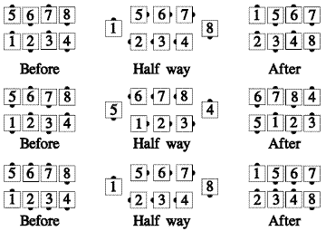

From general lines, with the ends forming a tandem: In each line, the end facing in Circulates. Meanwhile, each of the other dancers (in a single, smooth motion) faces the vacated spot, steps forward, and turns another 1/4 the same way he first turned. Ends back in parallel lines or waves.
The non-circulators' part is a single motion, rather than a 3-part move. This call can be fractionalized into halves, as shown below.

For Teaching: You can describe the non-circulators' part as a Run (or Flip) toward the vacated spot. This captures the idea of a single, flowing motion for them.
Timing: 4